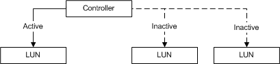

[Beginning with Windows 8 and Windows Server 2012, the Virtual Disk Service COM interface is superseded by the Windows Storage Management API.]
A controller object models a controller in a subsystem. Controllers are contained by subsystems, and each controller has one or more controller ports through which the host computer can write to and read from LUNs. A single controller can be simultaneously set to active for one LUN and inactive for others. A controller that is active for a specified LUN carries the responsibility for handling input to and output from the LUN. The following figure illustrates this idea.

VDS 1.0: Each of a subsystem's controllers is set to either active or inactive in relation to each of the LUNs the subsystem surfaces.
VDS applications use the IVdsSubSystem::QueryControllers method to determine the controllers that are contained by a specific subsystem. Callers can get a pointer to a specific controller by selecting the desired controller object from the enumeration that is returned by the QueryControllers method. With a controller object, a caller can set the controller status, query for its associated LUNs, query for its controller ports, and flush and invalidate the cache.
In addition to an object identifier, a name, and a serial number, controller object properties include the controller status and health, and a count of the ports.
The following table lists related interfaces, enumerations, and structures.
| Type | Element |
|---|---|
| Interfaces that are always exposed by this object | IVdsController |
| Interfaces that are always exposed by this object in VDS 1.1 and 2.0 Fibre Channel providers only | IVdsControllerControllerPort |
| Interfaces that may be exposed by this object | IVdsMaintenance |
| Associated enumerations | VDS_CONTROLLER_STATUS. |
| Associated structures | VDS_CONTROLLER_PROP and VDS_CONTROLLER_NOTIFICATION. |
Â
IVdsSubSystem::QueryControllers
Â
Â